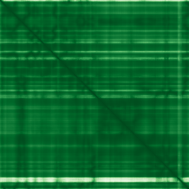
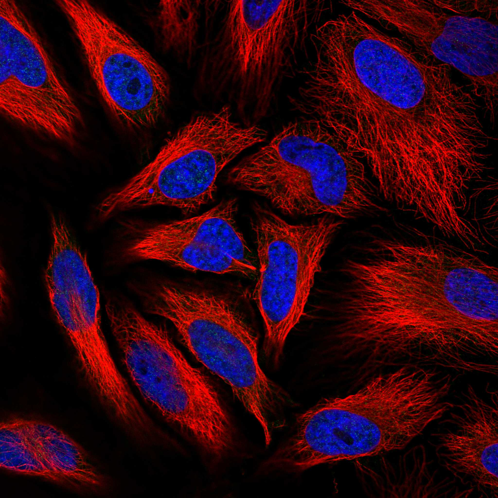
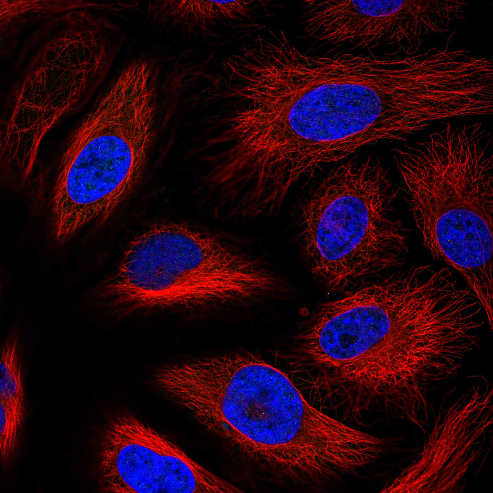

type: protein-evaluation gene: "GALK2" date: 2026-06-01 tags: [protein-scout, nucleoplasm, evaluation] status: scored ---
GALK2 核蛋白评估报告
1. 基本信息
| 项目 | 内容 |
|---|---|
| 基因名 / 别名 | GALK2 / GK2 |
| 蛋白全名 | N-acetylgalactosamine kinase |
| 蛋白大小 | 458 aa / 50.4 kDa |
| UniProt ID | Q01415 |
2. 评分总览
| 维度 | 得分 | 新权重 | 加权后 | 关键证据摘要 |
|---|---|---|---|---|
| 核定位特异性 | 5/10 | ×4 | 20.0 | HPA: Nucleoplasm+Cytosol Approved; UniProt 无定位注释; GO: cytosol IBA only |
| 蛋白大小 | 6/10 | ×1 | 6.0 | 458 aa, 50.4 kDa |
| 研究新颖性 | 10/10 | ×5 | 50.0 | PubMed strict=8, broad=23 |
| 三维结构 | 9/10 | ×3 | 27.0 | PDB 2A2C X-ray 1.65A full-length; PDB 2A2D X-ray 2.20A; AlphaFold pLDDT 94.9 |

| 调控结构域 | 5/10 | ×2 | 10.0 | Galactokinase family; 糖代谢 kinase, 非经典调控蛋白 |
| PPI 网络 | 7/10 | ×3 | 21.0 | STRING GALE/GALT/GALM 高置信度+实验支持; DHDH 实验分 0.743 |
| 加权总分 | 134/180** | |||
| 互证加分 | +1.0 | 全长高分辨晶体结构; Galactose metabolism pathway 强 PPI 网络 | ||
| 归一化总分 (÷1.83) | 73.2/100** |
3. 详细分析
3.1 核定位证据
| 来源 | 定位 | 可信度 |
|---|---|---|
| UniProt | 无亚细胞定位注释 | 不适用 |
| GO-CC | cytosol (IBA:GO_Central) | Predicted |
| Protein Atlas (IF) | Nucleoplasm, Cytosol (Approved) | Approved |
HPA IF 状态: IF available (Approved reliability) — HPA 主定位为 Nucleoplasm + Cytosol，获 Approved 认证。UniProt 无定位注释，GO-CC 仅给出 cytosol（IBA 推断）。HPA 的核质定位是 GALK2 唯一的核定位来源，但其 Approved 评级给予一定可信度。作为一个糖代谢酶（GalNAc kinase），核质定位可能反映其参与核内糖基化修饰或 salvage pathway。
3.2 结构与结构域
| 指标 | 数值 |
|---|---|
| AlphaFold | AF-Q01415-F1 |
| 平均 pLDDT | 94.9 |
| pLDDT >90 | 90.0% |
| pLDDT 70-90 | 7.2% |
| pLDDT 50-70 | 2.8% |
| pLDDT <50 | 0.0% |
| PDB | 2A2C (X-ray 1.65A, A=1-458 全长); 2A2D (X-ray 2.20A, A=1-458 全长) |
| InterPro | IPR000705, IPR019741, IPR019539, IPR013750, IPR036554, IPR006204, IPR006203, IPR006206, IPR020568, IPR014721 |
| Pfam | PF10509, PF08544, PF00288 |
AlphaFold PAE 状态: PAE 已下载，见上图。结构置信度极高（pLDDT 94.9），90% 残基 pLDDT >90，无残基低于 50。并且拥有两套全长高分辨 X-ray 晶体结构（2A2C: 1.65A, 2A2D: 2.20A），三维结构极为可靠，是本批 best-case。
3.3 研究现状
| 指标 | 数值 |
|---|---|
| PubMed strict (Title/Abstract) | 8 |
| PubMed broad | 23 |
| 别名 | GK2（未用于 scoring） |
文献极度稀少。关键文献包括 N-acetylgalactosamine kinase 分子架构（PMID:16006554）、circ-GALK2 在血管平滑肌钙化中的机制（PMID:40826429）、O-linked 糖基化缺陷细胞系（PMID:28654657）及少量 RNAi 和激酶筛选研究。几乎没有独立的功能性文献，新颖性极高。
3.4 PPI 网络（三源综合）
| Partner | Source | Score/Evidence | Relevance |
|---|---|---|---|
| GALE | STRING | 0.991 (exp 0.316, database 0.792) | Galactose metabolism, strong |
| GALT | STRING | 0.964 (exp 0.290, database 0.449) | Galactose metabolism |
| GALM | STRING | 0.963 (exp 0.308, database 0.792) | Galactose metabolism |
| DHDH | STRING | 0.829 (exp 0.743) | Strong experimental |
| IL11RA | STRING | 0.909 (exp 0.290, database 0.449) | Cytokine receptor |
| UAP1 | STRING | 0.779 (database 0.288) | Nucleotide sugar metabolism |
| PGM1 | STRING | 0.544 (exp 0.236) | Phosphoglucomutase |
| — | UniProt | 无记录互作 | — |
| POTEF | IntAct | anti tag coIP (PMID:28514442) | Actin-related |
| GNB2 | IntAct | anti tag coIP (PMID:28514442) | G protein signaling |
| AHNAK | IntAct | anti tag coIP (PMID:28514442) | Large scaffold protein |
STRING PPI 强有力指向半乳糖代谢通路（GALE, GALT, GALM），均有实验和数据支撑。DHDH 实验分高达 0.743，但功能关联不明确。UniProt 无互作记录，IntAct 以无差异 coIP 为主。
4. 总体评价
GALK2 的评分亮点在三维结构（全长 1.65A 晶体结构 + AlphaFold pLDDT 94.9）和极高新颖性（PM=8）。劣势是核定位仅靠 HPA 单源、无 UniProt 核注释。作为糖代谢酶，其潜在核内功能（核质糖基化/O-GlcNAc 相关？）值得探索。建议作为高优先级核质候选保留，但需优先验证 HPA 核定位信号。
5. 数据来源
- UniProt: https://www.uniprot.org/uniprotkb/Q01415
- AlphaFold: https://alphafold.ebi.ac.uk/entry/Q01415
- PDB: 2A2C, 2A2D
- PubMed: https://pubmed.ncbi.nlm.nih.gov/?term=GALK2
- Protein Atlas: https://www.proteinatlas.org/ENSG00000156958-GALK2


HPA IF 图像已本地嵌入。
PAE 图像说明: AlphaFold PAE 图像已重新获取并嵌入（见下方 PAE 图像修正块）；结构判断仍结合 pLDDT 与 PAE 综合判断。
<!-- AF_PAE_REPAIR_START --> PAE 图像修正（2026-06-05）: AlphaFold 提供 predicted aligned error 图像；此前“PAE 图像暂无数据”的表述为未获取/未嵌入导致。